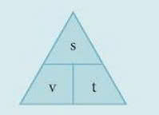

I. Khái niệm tốc độ
Nếu quãng đường đi được là s, thời gian đi là t thì tốc độ được tính theo công thức:
v = s / t
Trong đó:
- v: tốc độ.
- s: quãng đường đi được.
- t: thời gian chuyển động.
Mối quan hệ giữa ba đại lượng v, s, t được biểu diễn bằng sơ đồ:

Thương số s/t đặc trưng cho sự nhanh hay chậm của chuyển động và được gọi là tốc độ.
II. Đơn vị đo tốc độ
Trong hệ đo lường chính thức của nước ta, đơn vị đo tốc độ là:
- m/s (mét trên giây).
- km/h (kilômét trên giờ).
Cách đổi đơn vị
- 1 m/s = 3,6 km/h.
- 1 km/h ≈ 0,278 m/s.
III. Ghi nhớ
- Tốc độ cho biết mức độ nhanh hay chậm của chuyển động.
- Công thức tính tốc độ: v = s/t.
- Đơn vị thường dùng là m/s và km/h.
- Cần đổi đơn vị phù hợp trước khi tính toán.